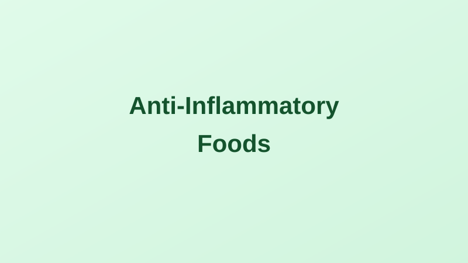

10 Anti-Inflammatory Foods to Add to Your Diet
Written by Sarah Mitchell
Health & Wellness Writer • Published: April 11, 2026 • 7 min read
Inflammation is your immune system's natural defense response — but when it becomes chronic and low-grade, it quietly damages tissues and organs over years and decades. Chronic inflammation is now recognized as an underlying driver of heart disease, type 2 diabetes, Alzheimer's disease, certain cancers, and rheumatoid arthritis. And what you eat is one of the most powerful tools you have to modulate it.
Research consistently shows that diets high in ultra-processed foods, refined carbohydrates, and trans fats promote inflammation, while whole-food, plant-rich diets — particularly the Mediterranean diet — reduce inflammatory markers like C-reactive protein (CRP) and interleukin-6 (IL-6). Here are 10 foods with the strongest scientific support.
1. Fatty Fish (Salmon, Mackerel, Sardines)
Fatty fish are among the richest dietary sources of omega-3 fatty acids — specifically EPA and DHA — which are directly incorporated into cell membranes and converted into anti-inflammatory compounds called resolvins and protectins. The NIH Office of Dietary Supplements notes that omega-3s have been shown to reduce levels of inflammatory cytokines and eicosanoids. Aim for at least two 3.5-oz servings of fatty fish per week.
2. Extra-Virgin Olive Oil
The cornerstone of the Mediterranean diet, extra-virgin olive oil contains oleocanthal, a compound that inhibits the same inflammatory enzymes (COX-1 and COX-2) as ibuprofen — though at lower potency. A large clinical trial, the PREDIMED study published in the New England Journal of Medicine, found that people who consumed a Mediterranean diet supplemented with olive oil had a 30% lower risk of major cardiovascular events (Estruch et al., 2013). Use olive oil as your primary cooking and dressing fat.
3. Leafy Greens (Spinach, Kale, Swiss Chard)
Dark leafy greens are rich in vitamin K, magnesium, and flavonoids — compounds associated with reduced inflammation. They also contain alpha-linolenic acid (ALA), a plant-based omega-3. A large prospective study found that higher consumption of leafy greens was associated with lower levels of inflammatory markers, particularly IL-6 and TNF-alpha. Aim for 1-2 cups daily, raw or lightly cooked.
4. Blueberries (and Other Berries)
Blueberries contain some of the highest concentrations of anthocyanins — the pigments that give them their color — which have potent anti-inflammatory and antioxidant properties. A study published in the Journal of Nutrition found that daily blueberry consumption reduced markers of inflammation and improved immune function in healthy adults over six weeks. Frozen blueberries retain their phytonutrient content and are a cost-effective option year-round.
5. Walnuts
Among nuts, walnuts stand out for their inflammation-fighting profile. They're the richest nut source of ALA omega-3s and also contain ellagic acid, a polyphenol that gut bacteria convert into urolithins — compounds with demonstrated anti-inflammatory effects. Research from the Harvard School of Public Health found that regular walnut consumption was associated with lower CRP and IL-6 levels. A one-ounce serving (about 14 halves) is an easy daily target.
6. Turmeric
Turmeric's active compound, curcumin, has been extensively studied for anti-inflammatory effects. It inhibits NF-κB, a molecule that activates genes related to inflammation. A meta-analysis of 8 randomized controlled trials found that curcumin supplementation significantly reduced serum CRP levels (Sahebkar, 2014). Curcumin is poorly absorbed on its own — bioavailability increases dramatically when consumed with black pepper (piperine), which blocks its metabolism.
7. Green Tea
Green tea is one of the richest sources of EGCG (epigallocatechin gallate), a catechin that suppresses inflammatory pathways at the molecular level. Regular green tea consumption has been associated with lower CRP levels and reduced risk of inflammatory conditions. Matcha — powdered whole-leaf green tea — delivers even higher concentrations of these compounds than steeped tea. 2-3 cups per day is the most studied dose.
8. Tomatoes
Tomatoes are one of the best dietary sources of lycopene, a carotenoid with potent antioxidant properties that also reduces inflammation. Interestingly, lycopene is significantly more bioavailable in cooked and processed tomatoes (tomato sauce, paste, canned tomatoes) than in raw form. A meta-analysis found that higher lycopene intake was associated with a 14% lower risk of stroke (Chen et al., 2013).
9. Dark Chocolate (70%+ Cacao)
Good news for chocolate lovers: dark chocolate with at least 70% cacao content contains flavanols — particularly epicatechin — that reduce oxidative stress and suppress inflammatory markers. A study in Nutrients found that regular dark chocolate consumption reduced CRP in adults. The benefits appear dose-dependent, and the threshold of ~70% cacao is important — milk chocolate contains too much added sugar to be beneficial. 1-2 small squares (about 1 oz) daily is a reasonable amount.
10. Legumes (Beans, Lentils, Chickpeas)
Legumes deliver an anti-inflammatory triple punch: high fiber (which feeds anti-inflammatory gut bacteria), polyphenols, and resistant starch. Research shows people who eat beans regularly have lower CRP levels and better gut microbiome diversity. They're also exceptionally cost-effective — dried lentils and beans are among the most nutrient-dense foods per dollar available in American grocery stores.
The Pattern Matters More Than Any Single Food
No single food is a silver bullet. The strongest evidence for reducing chronic inflammation comes from dietary patterns — consistently eating a variety of whole, minimally processed foods while limiting ultra-processed foods, refined sugars, and industrially processed seed oils. The Mediterranean and MIND diets are the most studied and consistently show benefits across inflammation markers, cardiovascular health, and cognitive aging.
Disclaimer: This article is for informational purposes only and is not medical advice. Dietary changes should be discussed with your healthcare provider, especially if you take medications or have an inflammatory condition being managed medically.
Sarah Mitchell
Sarah is a health and wellness writer focused on making scientific research accessible to everyday readers.